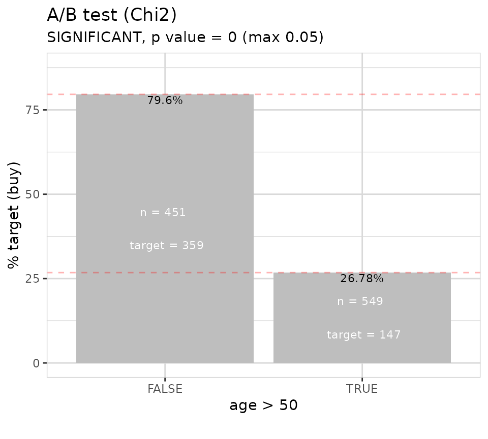

The explore package offers an easy way to do basic A/B testing.

A/B testing with tidy data
If you want to A/B test your own data, pass them into the ´abtest()´ function.
In this example we are using synthetic data using one of the
create_data_() functions of explore
library(dplyr)
library(explore)
data <- create_data_buy(obs = 1000)Describe dataset
data %>% describe()
#> # A tibble: 13 × 8
#> variable type na na_pct unique min mean max
#> <chr> <chr> <int> <dbl> <int> <dbl> <dbl> <dbl>
#> 1 period int 0 0 1 202012 202012 202012
#> 2 buy int 0 0 2 0 0.51 1
#> 3 age int 0 0 66 17 52.3 88
#> 4 city_ind int 0 0 2 0 0.5 1
#> 5 female_ind int 0 0 2 0 0.5 1
#> 6 fixedvoice_ind int 0 0 2 0 0.11 1
#> 7 fixeddata_ind int 0 0 1 1 1 1
#> 8 fixedtv_ind int 0 0 2 0 0.4 1
#> 9 mobilevoice_ind int 0 0 2 0 0.63 1
#> 10 mobiledata_prd chr 0 0 3 NA NA NA
#> 11 bbi_speed_ind int 0 0 2 0 0.61 1
#> 12 bbi_usg_gb int 0 0 83 9 164. 100000
#> 13 hh_single int 0 0 2 0 0.37 1Each observation is a customer. The ´buy´ variable contains 0/1 values (1 = the customer did buy a product)
Hypothesis age > 50
We want to test the hypothesis, that customer with age > 50 have a different buying behavior.

We see a clear pattern, that people who buy differ in age from people who don´t buy. But is this difference statistically significant?

The A/B test shows a statistically significant difference!
Hypothesis Mobile Voice vs Broadband Usage
We would like to test the hypothesis, that customer with a mobile voice product (mobilevoice_ind == 1) have different bbi_usg_gb (broadband usage in GB)

The boxplot shows a small difference in Broadband Usage between customers with/without Mobile Voice product. But is this difference statistically significant?
The A/B test shows a NOT statistically significant difference! The p-value is 0.09, but should be max. 0.05 (as we defined sign_level = 0.05)
A/B testing with count data
In this example we are using the Titanic datasst.
use_data_titanic() is a functions of explore
that makes it easier to use popular example datasets.
library(dplyr)
library(explore)
data <- use_data_titanic(count = TRUE)